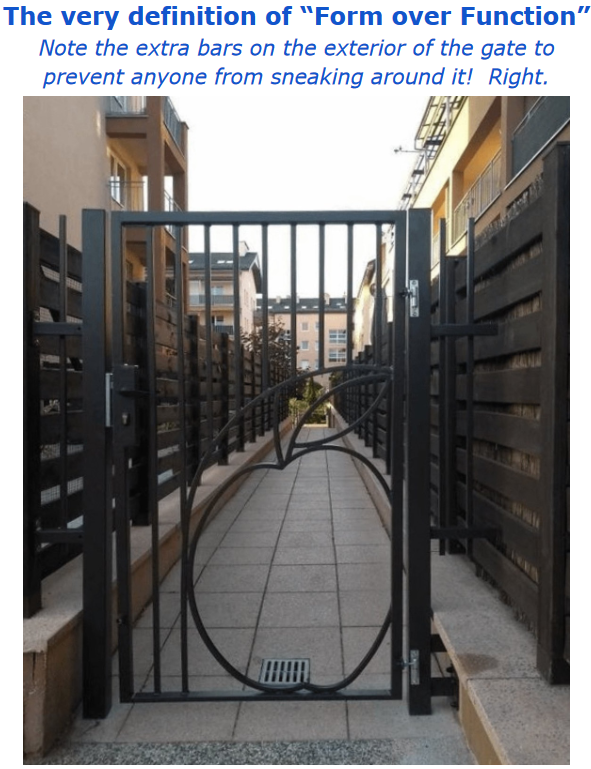

Pipelines and CI/CD Resources
With DevSecOps becoming standard, CI/CD pipelines are everywhere, building and deploying software continuously. Thousands of pipelines run daily, each executing tasks like code build, test, and deployment. Automation is key, often paired with guardrails to ensure quality and security.
TL;DR: Access is Everything
A different perspective on CI/CD security: Shifting from "ensuring every pipeline is secure" to "ensuring the access to privileged resources is done under the right conditions".
-
Set Outcome-Focused Expectations: Define what good looks like based on your organization's needs, risk profile, and strategic goals. User responsabilities, training, support, compliance and accountability should be clearly defined.
-
Focus on Protected Resources: Prioritise securing access to high-impact CI/CD resources (e.g., resources that hold credentials and secrets) rather than trying to secure every pipeline individually.
-
Lifecycle Management: CI/CD resources' lifecycle becomes the key to ensure access to these is appropriately granted and revoked. Conditions/gates must protect the resources by ensuring the right conditions are met at every use.
-
Holistic Evaluation: When assessing CI/CD configurations, consider the platform as a whole rather than isolated settings. Ensure security and operational excellence work together. (As Microsoft puts it: "Security recommendations are interdependent. Your posture relies on the specific recommendations you implement, which, in turn, align with your DevOps and security teams' concerns and organizational policies.")
-
Stay Tuned For Next Steps: Explore methods to enforce access conditions, even when native approval mechanisms may not fully support them.
CI/CD Pipeline Basics
A pipeline is a structured set of instructions that, when followed correctly, produce a desired outcome. Pipelines help ensure instructions are executed consistently and reliably, with fewer surprises.
RUN IN compute
RUN AS user
GET SOURCE repo
GET VARIABLES variable_store
DO task1
DO task2
DO task3
OUTPUT logs
Without the resources around it, a pipeline is just a recipe in a closed recipe book - a process waiting to be executed. Ensuring the resources are accessible under the right conditions, at the time of execution, is essential.
Semantics change across vendors, we'll focus on Azure Pipelines (concepts generally map to others).
Resources
In Azure DevOps land, CI/CD resources can take multiple forms. We can grasp how they may grant the pipelines accessing them privileges on targets.
- Agent Pools: Pipelines use agent pools to execute tasks. Sometimes agents' identities, are leveraged to access specific targets.
- Service Connections: Pipelines can authenticate and interact with external targets via service connections. They represent the access to a target/action.
- Variable Groups: These may hold shared values and sensitive information allowing pipelines access to targets.
- Secure Files: Traditionally, store sensitive files such as signing certificates.
- Repositories: Where source code is stored. At times, changes to specific repositories/branches may trigger deployment actions targeting live environments.
- Environments: Collections of resources (abstraction). Usually, production/non-production is segregated.
Anytime a resource is mentioned in this document, it can be any of the above.
A common theme: Everything is about access.
Guardrails
Guardrails give autonomy and confidence to developers executing engineering and development activities, while knowing if they are stepping outside what is deemed acceptable by the organisation. Often embedded in the CI/CD pipeline workflow, they catch non-optimal configurations at an early stage, ensuring cost-effective remediations.
Guardrails are (semi) automated checks/controls designed to implement best practices, security standards, and compliance requirements. Guardrails help maintain development excellence while moving at an agile pace.
Privileged Resources
Resources accessed at a given time, in a given context, are, ultimately, what grants privileges to a pipeline.
Defining the appropriate operational and security conditions for accessing a protected resource can be challenging. It's easy to disturb the balance between controls and development. This is, however, the first step into enabling the definition of a 'what good looks like' baseline. Metrics and KPIs can be derived from it.
An example: To deploy a binary to a production repository, it must go through the vulnerability scanning process and be signed with an organisational key.
Hardening Resources Access
Assuming there is a defined set of operational and security conditions the pipeline must meet to access a specific resource, how can that resource be protected from misuse?
Commonly used quality gates might provide a false sense of operational and security excellence.

Overreliance on Weak Controls
Native pipeline-level controls, such as the initial access validation step, are sometimes relied upon to gate access into privileged resources. Is this good enough? Once a pipeline is allowed to access a resource (build agent, source code repository, service connection), it will persist that access indefinitely.
Azure Pipelines Structure
To understand why this is the case, we need to look at how Azure Pipelines are structured:
- Pipeline Definitions: Define the stage/job/step sequence for the CI/CD process and declare the resources it needs access to
- Pipeline Run: The execution of a pipeline, as defined by the pipeline definition
While there are many valid reasons for updating pipeline definitions, the key point is, that once a pipeline build definition is granted access (following the initial resource access prompt), this access persists unless explicitly revoked - Regardless of any subsequent changes to the pipeline definition.
Make it real
1. Initial Pipeline Setup: Imagine a pipeline is created and granted specific access, such as to a sensitive build agent, source code repository, or a service connection with elevated privileges (e.g., access to deployment credentials or sensitive APIs). This access is granted based on the pipeline's initial configuration.
2. Persistent Access: Once this pipeline definition has been authorised, it retains that access for all future pipeline runs, regardless of changes made to the definition later on. This means that after the first time it's authorised, Azure DevOps does not automatically revalidate permissions if the pipeline configuration is updated.
3. Modifying the Pipeline: If you have access to update the pipeline definition (even as a lower-privileged user), you can modify the pipeline in a way that leverages the persistent access it has to the sensitive resources. For example, you can: - Inject malicious or unauthorised tasks into the pipeline that use the existing service connection to exfiltrate sensitive data (e.g., source code, secrets, or deployment credentials). - Alter the pipeline to deploy malicious code or access restricted environments through the service connection. - Use the authorised build agent to execute privileged commands that were not part of the original pipeline's intent.
4. Executing a Pipeline Run: After making these changes to the pipeline definition, you can trigger a new pipeline run. Since the persistent access to sensitive resources is still valid, the updated pipeline will be executed with elevated privileges.
5. Stealth and Persistence: Because the access controls are applied at the pipeline definition level and are not re-validated with every change, this method allows you to continue executing malicious actions without triggering immediate alerts or permission checks. The pipeline may look legitimate, but it can be performing unauthorised actions in the background.
See Weaponizing Open Source for a hypothetical scenario.
But I Use Pipeline Approvals
A common scenario in CI/CD is the deployment of Terraform-declared resources into a target environment. The plan -> manual approval -> apply pattern allows users to do a sanity check before deploying to target environments (e.g.: production). It even allows the definition of a restricted Approvers group.
The suitability of this control depends on what you are trying to achieve. Can I skip the approval stage? By editing the pipeline definition file you can bypass guardrails, approval steps, and even inject malicious code - There are many ways for arbitrary code to find its way to execution in your run.
How easy is it to bypass that approval step? How stealthy can a user/attacker be? How much are you relying on this standalone approval step?
Note: There are legitimate operational reasons, with no malicious intent, users may feel the need to bypass checks.
But I Use Branching Strategies
That's good, however, what are you trying to achieve? Do these branching strategies alone help you get to the desired outcome? Consider whether you can create a branch from the main branch, modify the pipeline and scripts, and trigger a run with the same level of access.
The assumption resources can only be accessed from the main branch is not always true, especially by default. You can create a branch, make changes, and execute it with the same privileges, which potentially undermines the purpose of your branching strategy.
As Microsoft puts it: Consider prioritizing security in critical areas while accepting some trade-offs for convenience in other aspects.
Protected Resources
I like to look at protected resources as a mindset. Why try to secure every single pipeline when the primary concern is the resources being accessed? Ensuring that thousands of pipeline executions align with your security expectations can be overly complex and burdensome to manage. Instead, consider securing access to privileged CI/CD resources (which those pipelines can access).
It shifts the thinking from "ensuring every pipeline is secure" to "ensuring every access to privileged resources is done under the right conditions".
An Azure DevOps-native way to do this is through approvals and checks. This allows you to add specific actions to be triggered anytime the deemed protected resource is accessed (from manual approvals to business hours checks, required template use, and even invoking REST APIs).
Whether you are looking for manual approval or looking to ensure specific tools are being used within your pipelines, you define the conditions that must be met for resource access to be granted.
An additional benefit of having a protected CI/CD resource-focused approach is, it encourages a least privileged approach where there is proper segregation of privileges (otherwise, you would constantly need to apply the highest level of scrutiny to run any pipeline). Arguably, it also increases the management effort. "Identity is easy!", said no one, ever.
Disclaimers
This is not new!
Yet I don't see heavy adoption of a protected-resource-focused approach. I wonder why that is?
Microsoft published this table where almost all roads lead to "Protect resource X with checks and pipeline permissions"
Sometimes what we uncover about the systems we work with is simply a case of RTDM (Read The Damn Manual). Refer to Microsoft's guide on protected resources for a clearer understanding.
This is not just about security!
Protected resources are not solely about security - they are equally critical for ensuring operational excellence, sustainability, maintenance, and high-quality development processes. Balancing these factors is key to maintaining a resilient and efficient system.
This is also NOT a silver bullet!
The elephant in the room is that CI/CD resources are merely a means for your pipelines to access a target. Issues around access control outside the CI/CD platform are not addressed by the mechanisms we discussed.
Next Challenge
Thousands of pipelines run daily, each executing tasks like code build, test, and deployment. We have all these tools and technologies that help us adhere to the best practices (guardrailing activities).
How can we ensure all right conditions we've defined are met, even when native approvals and checks are not available?
Conclusion
I would focus on protecting access to service connections, variable groups and agent pools. However, if and how you leverage this piece of information is highly dependent on your environment and strategy.
This is the first of several upcoming research findings on CI/CD, with more insights and analysis. Stay tuned for deeper dives!